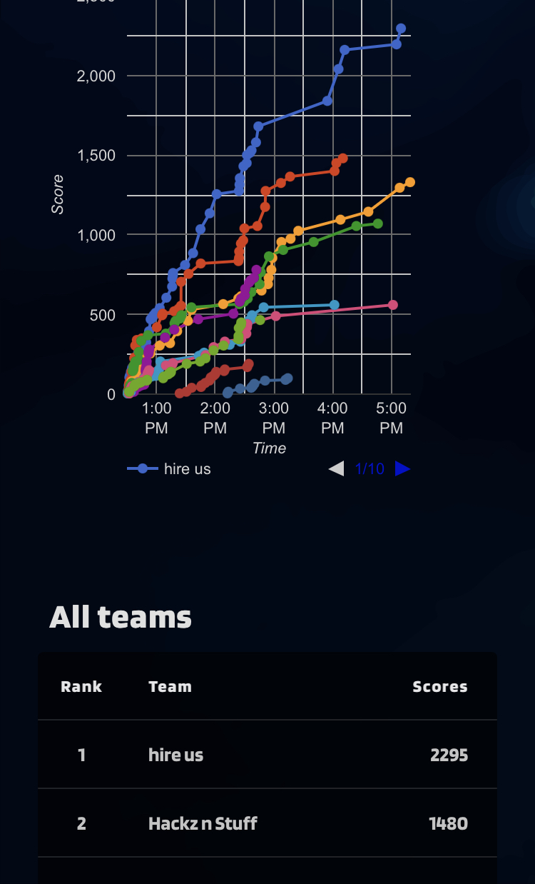

Introduction
In the world of cybersecurity, every day counts as a new adventure, and that was never more evident than at CyberOps 2022, a one-day cybersecurity conference hosted by Old Dominion University. With distinguished speakers like Assura and Huntington Ingalls Industries (HII), this compact yet potent event left a lasting impact on all who attended. Join me as I recount my thrilling experience at CyberOps 2022, featuring some of the brightest minds in the field.
Assura's Wisdom: A Glimpse into the Future
Assura's keynote set the tone for the day, providing a glimpse into the future of cybersecurity. With a dynamic presentation, Assura emphasized the importance of vigilance and innovation in a rapidly evolving digital landscape. It was a wake-up call for us all, motivating us to stay ahead of the curve and adapt to the ever-changing threat landscape.
HII's Industry-Leading Practices
Huntington Ingalls Industries (HII), a powerhouse in the aerospace and defense sector, shared its cybersecurity journey and practices. Their presentation was nothing short of eye-opening. HII demonstrated how cybersecurity is not just a concern for tech companies but is of paramount importance in all industries, particularly when dealing with sensitive data and critical infrastructure.
The Competition
The CTF competition at CyberOps 2022 was intentionally made for beginners, with some more difficult questions sprinkled in for those who are more experienced. They tested participants' skills in reverse engineering, cryptography, forensics, reconnaissance, and more.
As the day drew to a close, the tension in the CTF arena was noticeable. Teams had been tirelessly working to crack the challenges and secure the top positions. The closing ceremony was a moment of excitement and anticipation.
While my team didn't clinch the first place, the experience itself was a significant win. We had learned, grown, and made new connections in the cybersecurity community. The awards and recognition given to the top-performing teams were well-deserved, and we left with a deep sense of satisfaction and newfound knowledge.
Conclusion
In a single day, CyberOps 2023 hosted by Old Dominion University managed to deliver a concentrated dose of cybersecurity knowledge and competition. It reaffirmed the importance of staying informed, connecting with peers, and continually honing our skills in the field of cybersecurity. If you're passionate about cybersecurity and want to stay up-to-date with the latest trends and insights, attending events like CyberOps is a must.
